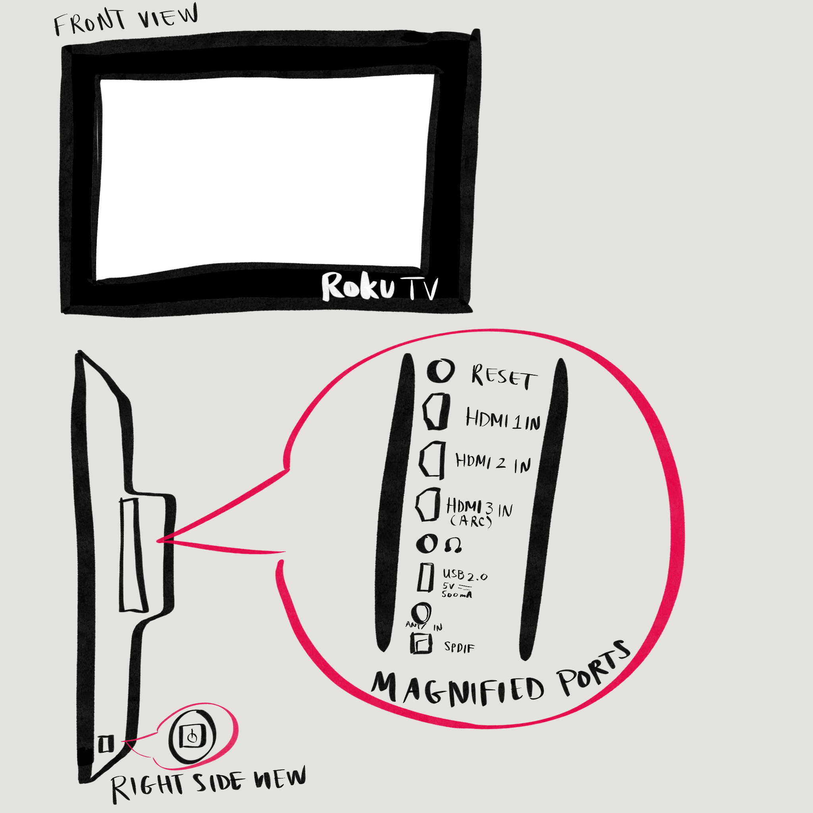
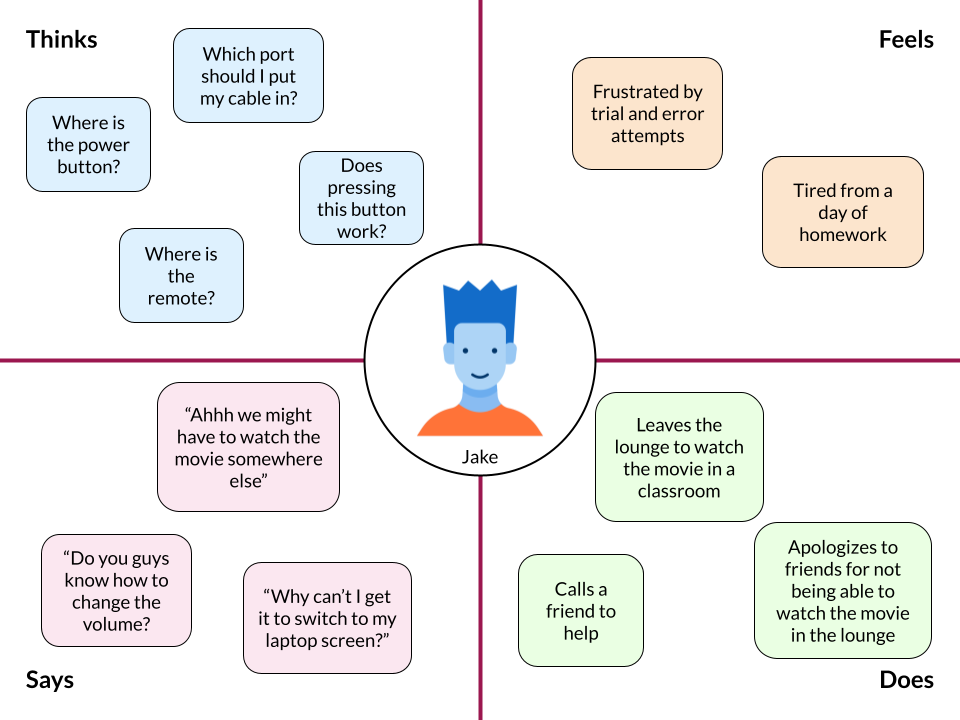
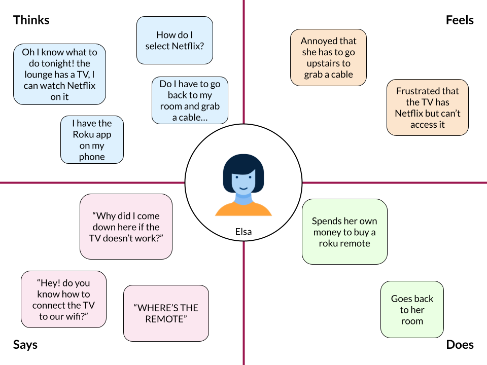
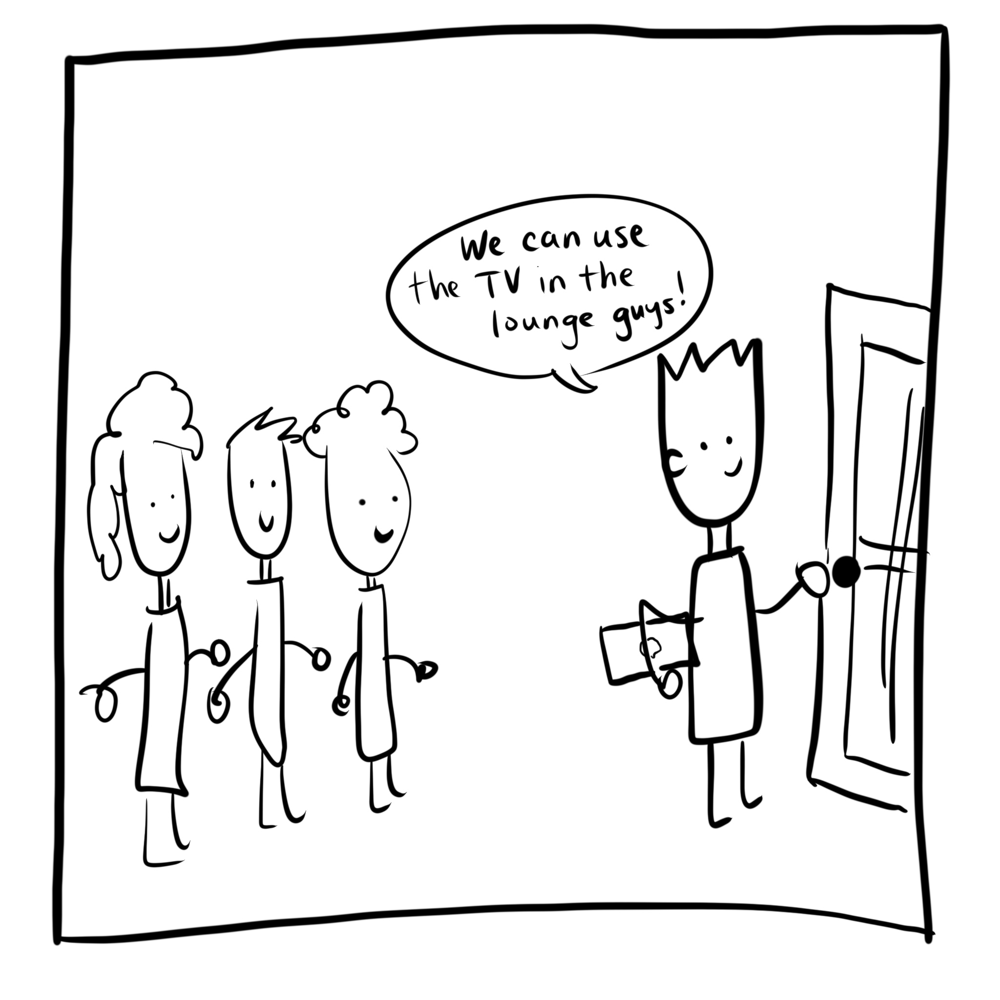
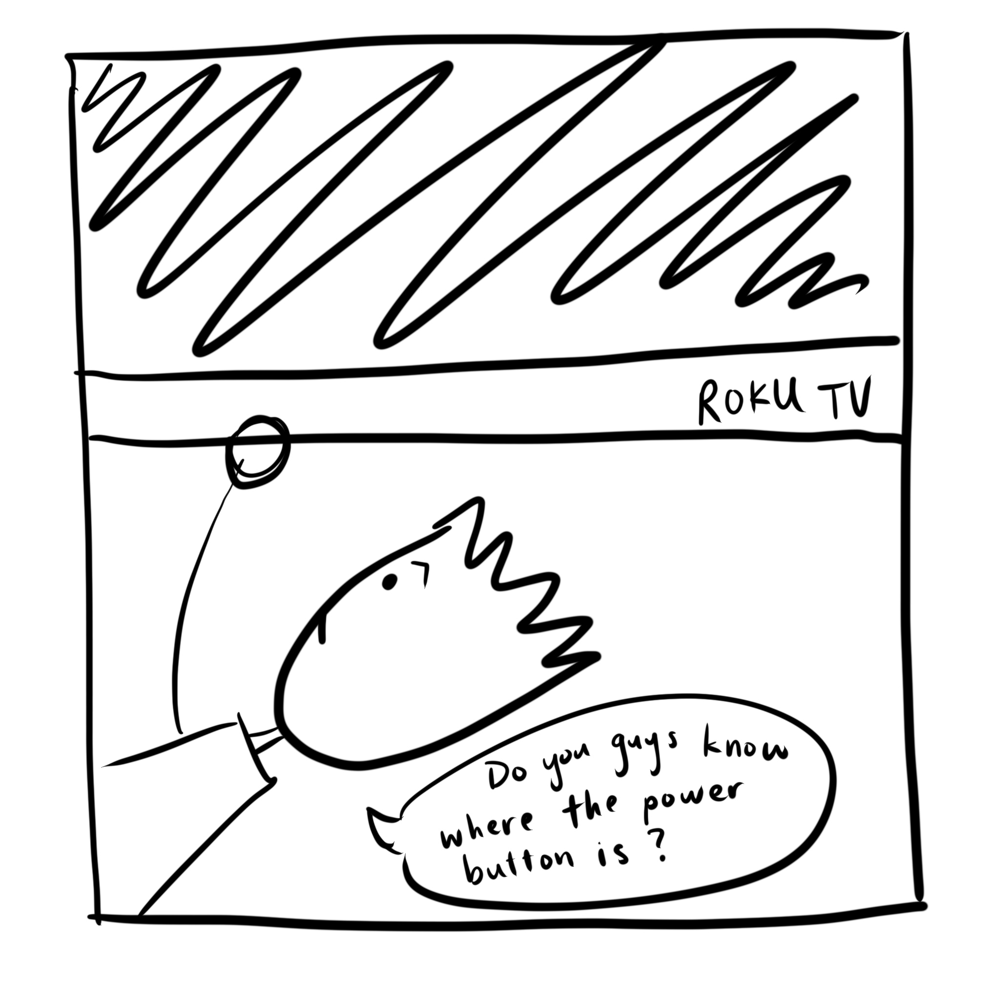
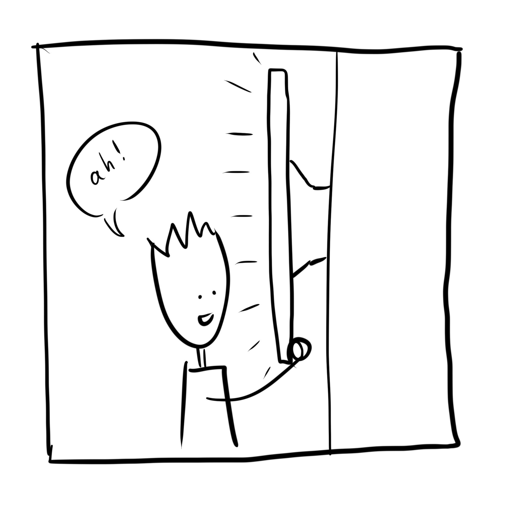
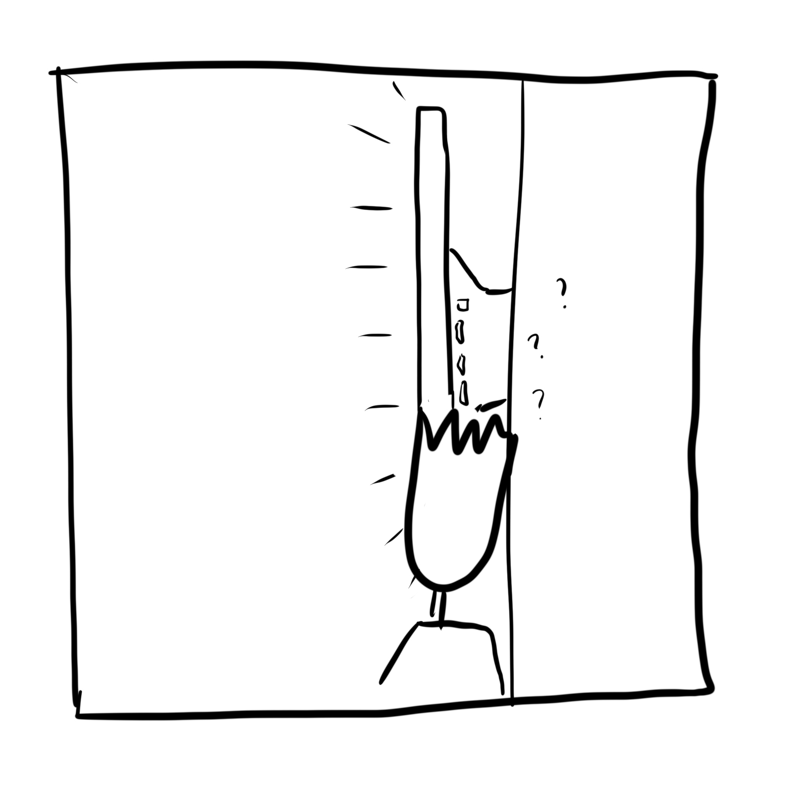
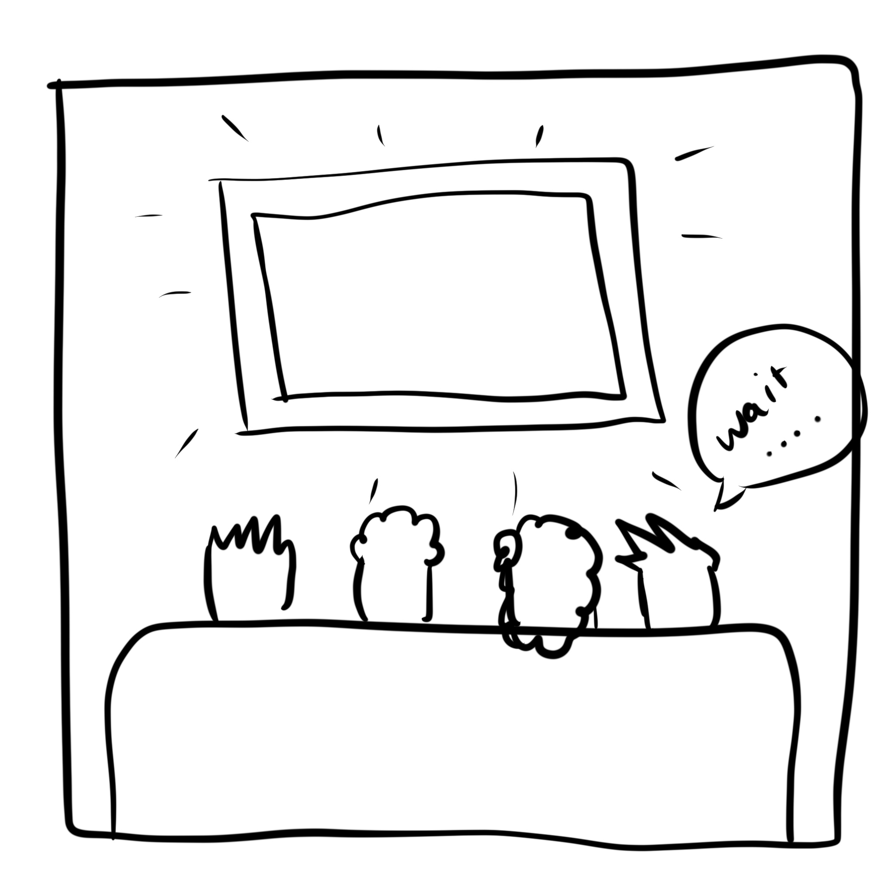
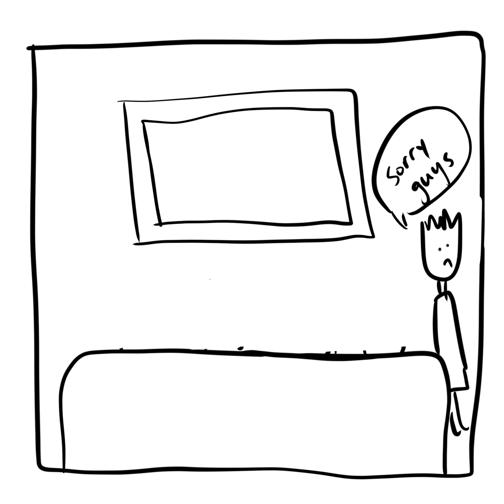

Personas & Storyboarding :
The Lounge TV
The Roku TV in Caswell's basement, as in many other dorms, is offered for students' use.
I set out to observe and record people using this interface to create a persona and storyboard of a
college dorm TV user.
This interface has

- 3 HDMI ports for users to use their own input devices
- Audio in/out ports for headphone use
- A joystick button that can press in/out, move up/down and move left/right. This controls power, volume, and input selection
Annotated sketch of TV interface
Part 1: Observations
I started by observing people using the TV lounge. This TV was used both by individuals and by groups of people.
Each of them had to do some
"setup," which included
(1) turning the TV on and
(2) choosing an input.
These steps were pretty consistent across different uses, but different groups of people did them in different ways.
One person was able to navigate the power button behind the TV within a few seconds, but others had different reactions.
One reaction that I heard a few times was "where is the remote?"
Spoiler: no one could find the remote.
One person first felt across the bottom of TV before looking under and then on the side of the TV, where they found the button.
After turning on the TV, users found different ways to use the TV to fit their intended activity.
Some users had a device (laptop, tablet, phone), an HDMI cord,
both a cord and a device, or neither with them.
The amount of time it took to insert/change input varied among users, and varied based on what materials
they brought with them.
So came my questions for them!
- What did you want to use the TV for?
- watching movies/TV shows, screen-sharing presentation with friends, playing Nintendo Switch games with friends
- What was your first-time experience using the TV like?
- "Took me a second to find the power and fit my cord into the TV. I can never get the HDMI cord in the slot my first try."
- "At first I couldn't use it without the remote. The TV has to be on the same Wi-Fi connection as your phone in order to use the app remote, so I decided to not use the TV. I usually plug in my laptop with an HDMI cord now."
- "The buttons are kinda weird, I didn't know it changed volume until halfway through a movie. I still get the power and volume directions mixed up"
- What features do you wish the TV had?
- individual volume buttons, a remote/a way to remotely control without Wi-Fi, louder speakers
Part 2: Personas
Using my observations, I created 2 personas of archetypal dorm TV users.
Persona 1: Jake
Jake is a college student who is hosting a movie night in the lounge with
his friends after a long day of studying. He has a laptop and HDMI cable, but he hasn't used this TV before.

Persona 2: Elsa
Elsa is a college student who wants to watch Netflix by herself on the lounge
TV because it is bigger than her laptop. She hasn't used the TV before.

Part 3: Storyboards
I took Jack's persona and created a storyboard of his TV lounge experience.

1. Jack invited his friends to his dorm to watch a movie together. He brought his
laptop and an HDMI cable. He's prepared!

2. Jack first tries to find the power button and searches under the TV for it.
He has to ask his friends for help!

3. By looking from the side of the TV, he finds the power switch!

4. Jack has to squeeze against the wall to find the HDMI ports. He's a little confused -
which one is the TV set to? Which one should I choose?

5. Jack tries all the ports but none of them match the TV input. Jack tries to adjust
the TV input but can't find any "input" label.

6. Jack suggests that he and his friends go to Sayles to watch their movie.